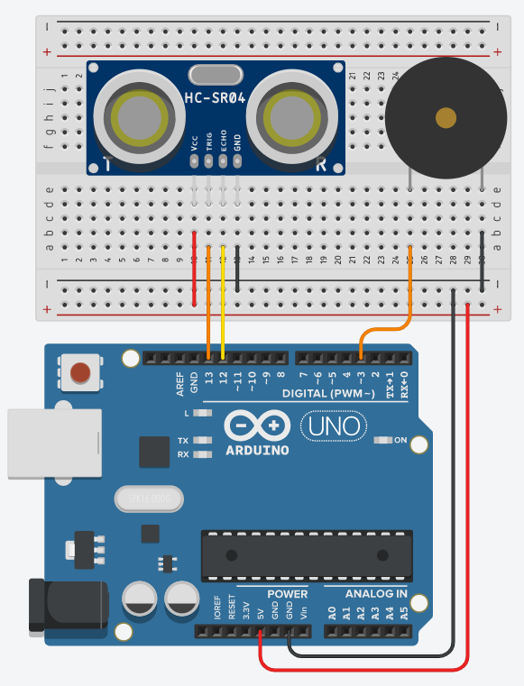

Medindo distâncias com o sensor ultrassônico
O ouvido humano consegue identificar ondas de até aproximadamente 20 KHZ, frequências acima disso são chamadas de ultrassônicas e é com esse tipo de onda que o sensor opera. Quando acionado, são emitidos 8 pulsos de 40 KHz, então o sensor detecta se há algum sinal de retorno; caso seja identificado, é emitido no pino de saída um sinal de nível alto cujo tempo de duração é igual ao tempo calculado entre o envio e o retorno do sensor ultrassônico.
Por meio do tempo fornecido pelo sensor, é possível calcular a distância até o objeto/obstáculo, utilizando a equação:
Distância = (Tempo de duração do sinal de saída × velocidade do som) / 2
Onde a velocidade do som pode ser considerada como 340 m/s (este valor é uma aproximação, pois a velocidade do som no ar depende de fatores como umidade e temperatura). Note bem as unidades utilizadas no cálculo, pois, para se obter um resultado consistente, o Tempo de duração do sinal de saída deve estar em segundos, para assim obter-se a distância em metros. Sem a divisão por 2, o valor calculado corresponderia à distância que o pulso percorreu para chegar até o objeto/obstáculo somado com a distância de volta.
O sensor ultrassônico HC-SR04 possui 4 pinos. Normalmente eles são identificados na placa, conforme a imagem abaixo. O pino posicionado na extremidade direita (GND) deve ser conectado ao terminal GND, enquanto o da extremidade esquerda (Vcc) deve ser conectado ao terminal de 5V. O pino TRIG serve para controlar o envio dos pulsos ultrassônicos, enquanto que o pino ECHO retorna para o Arduino o tempo de duração entre o envio e a recepção do sinal. O sensor opera com distâncias de aproximadamente 2cm até 4m, com o ângulo de efeito sendo 15º.

Neste projeto, você montará um circuito onde um [buzzer](../hardware/buzzer.md] tocará ao se aproximar uma certa distância do sensor. Será utilizado um buzzer do tipo passivo, pois é o que o simulador do Tinkercad oferece, porém sinta-se à vontade para utilizar um buzzer ativo; o código sofrerá uma pequena alteração, porém será explicitado onde fazê-la.
Hardware
Materiais necessários:
- 1x Sensor ultrassônico HC-SR04
- 1x Buzzer passivo
Esquemático:

Software
Para começar, é necessário declarar e inicializar algumas variáveis e constantes. Será utilizado o valor da velocidade do som em metros por microssegundos, pois é necessário manter a consistência de unidades nos cálculos, já que o sensor retorna o tempo em microssegundos.
const int pinoTrigger = 13; // Pino usado para disparar os pulsos do sensor
const int pinoEcho = 12; // pino usado para ler a saida do sensor
const int pinoBuzzer = 3;
const float velocidadeSom = 0.000340; // Velocidade do som em metros por microssegundo
float tempoEcho; // Tempo de resposta do sensor
float distancia; // Distância do sensor ao objeto detectado
Em seguida, é necessário definir os modos, inicializar os pinos e iniciar o seria na função setup().
void setup(){
// Configura pino de Trigger como saída e inicializa com nível baixo
pinMode(pinoTrigger, OUTPUT);
digitalWrite(pinoTrigger, LOW);
// Configura pino do buzzer como saída e inicializa com nível baixo
pinMode(pinoBuzzer, OUTPUT);
digitalWrite(pinoBuzzer, LOW);
// configura pino ECHO como entrada
pinMode(pinoEcho, INPUT);
// Inicializa a porta serial
Serial.begin(9600);
}
Antes de escrever a função loop(), é preciso definir uma outra função, que será utilizada para ativar a emissão de ondas ultrassônicas pelo sensor. Isso é feito facilmente, controlando a ativação do pino pinoTrigger: basta colocá-lo em modo alto e, após alguns microssegundos, voltar para o modo baixo.
void disparaPulsoUltrassonico(){
digitalWrite(pinoTrigger, HIGH);
delayMicroseconds(10);
digitalWrite(pinoTrigger, LOW);
}
Na função loop() para ativar o sensor, deve-se utilizar a função disparaPulsoUltrassonico(). Logo em seguida, é necessário capturar os dados gerados pelo sensor. Isso pode ser feito através da função pulseIn().
A função pulseIn() captura a duração de um pulso em um pino, sendo necessário passar dois parâmetros, respectivamente:
pino: pino ao qual a leitura será realizada;
valor: valor HIGH ou LOW, dependendo do tipo de leitura desejada.
Se o valor HIGH é passado para a função, a função pulseIn() espera o pino ir do estado LOW para HIGH, começa a temporizar e, quando o pino retorna ao estado LOW, o temporizador é parado. A função retorna o tamanho do pulso em microssegundos. O tempo de retorno será armazenado na variável tempoEcho.
tempoEcho = pulseIn(pinoEcho, HIGH);
Agora com o tempo em mãos, é possível calcular a distância utilizando a fórmula dada anteriormente. Aqui também haverá uma multiplicação por 100 para, assim, obter a distância em centímetros. O código ficará da seguinte maneira:
distancia = ((tempoEcho*velocidadeSom_mporus)/2)*100;
Agora, é possível imprimir o resultado no Serial.
Serial.print("Distancia em centimetros: ");
Serial.println(distancia);
Dessa maneira, é possível ativar o buzzer quando o sensor lê uma certa distância. No código abaixo, a frequência 784, que corresponde à nota G (sol), tocará quando algo estiver a menos de 120 centímetros do sensor. Caso você esteja utilizando um buzzer ativo, basta substituir a função tone() por digitalWrite(buzzer, HIGH);
if(distancia <= 80)
tone(buzzer, 784, 200);
else
digitalWrite(buzzer, LOW);
Para finalizar a função loop(), é preciso acrescentar um pequeno delay() para não sobrecarregar o serial e tornar possível uma leitura mais nítida.
delay(200);
}
O código completo ficará da seguinte forma:
const int pinTrigger = 13; // Pino para disparar os pulsos do sensor
const int pinEcho = 12; // Pino para ler a saida do sensor
const int buzzer = 3; // Pino do buzzer
const float velocidadeSom = 0.000340; // Velocidade do som, metros por microssegundo
float tempoEcho; // Tempo de resposta do sensor
float distancia; // Distância do sensor ao objeto detectado
void setup(){
// Configura pino de Trigger como saída e inicializa com nível baixo
pinMode(pinoTrigger, OUTPUT);
digitalWrite(pinoTrigger, LOW);
// Configura pino do buzzer como saída e inicializa com nível baixo
pinMode(buzzer, OUTPUT);
digitalWrite(buzzer, LOW);
// configura pino ECHO como entrada
pinMode(pinoEcho, INPUT);
// Inicializa a porta serial
Serial.begin(9600);
}
void loop(){
// Envia pulso para o disparar o sensor
disparaPulsoUltrassonico();
// Mede o tempo de duração do sinal no pino de leitura(us)
tempoEcho = pulseIn(pinEcho, HIGH);
distancia = ((tempoEcho*velocidadeSom_mporus)/2)*100;
// Impressão no serial
Serial.print("Distancia em centimetros: ");
Serial.println(distancia);
// Acionamento do buzzer
if(distancia <= 120)
tone(buzzer, 784, 200);
else
digitalWrite(buzzer, LOW);
delay(200);
}
// Funçao para enviar o pulso de trigger para o sensor ultrassônico
void disparaPulsoUltrassonico(){
digitalWrite(pinTrigger, HIGH);
delayMicroseconds(10);
digitalWrite(pinTrigger, LOW);
}
Para testar o projeto, basta utilizar alguma fita métrica, colocando objetos a distâncias variadas do sensor e analisando se a medida física corresponde ao valor indicado no monitor serial. Note também que quando o objeto estiver a 120 centímetros ou menos, o buzzer deve começar a tocar.
Na plataforma Tinkercad, enquanto o projeto está sendo simulado, basta clicar no sensor ultrassônico e uma pequena interface se abrirá. Nesta interface, a área de funcionamento do sensor é destacada na cor azul. É possível posicionar um objeto nela e sua distância (tanto em polegadas quanto em centímetros) aparecerá logo acima do sensor.

O Arduino, aliado com esse sensor, abre um leque de possibilidades para projetos interessantes, como sonares, robôs autônomos que detectam e mapeiam paredes de um ambiente, velocímetros e até mesmo automação para casa (como um detector de presença para ativar lâmpadas ou eletrodomésticos, por exemplo).